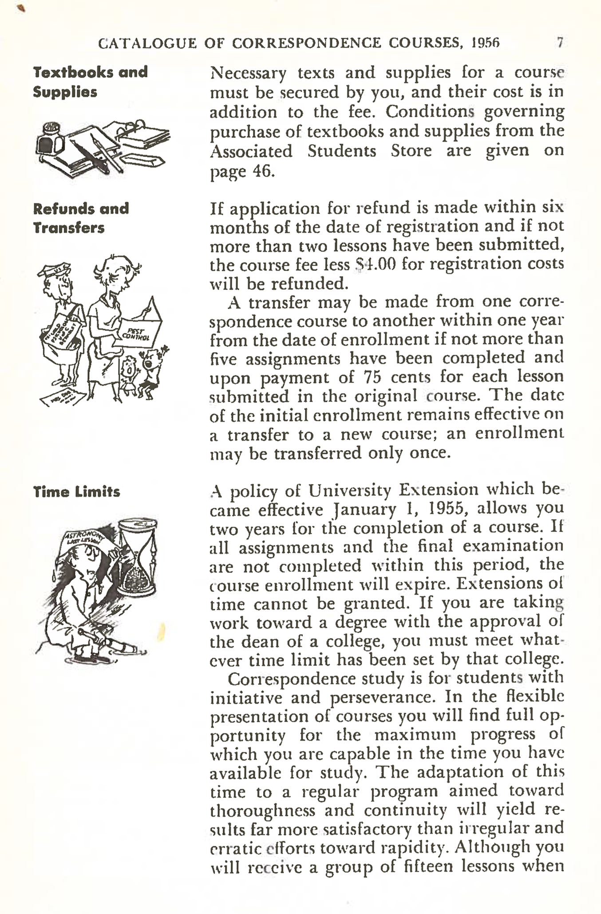
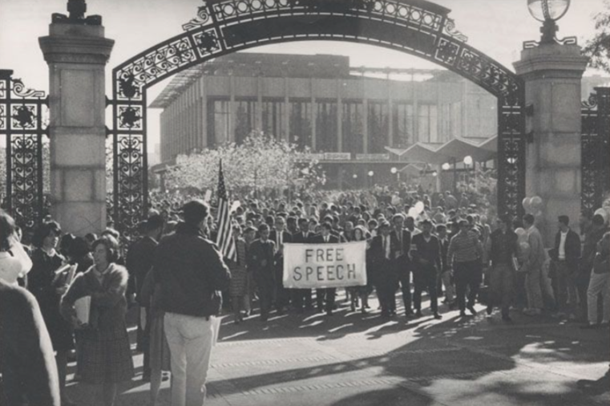
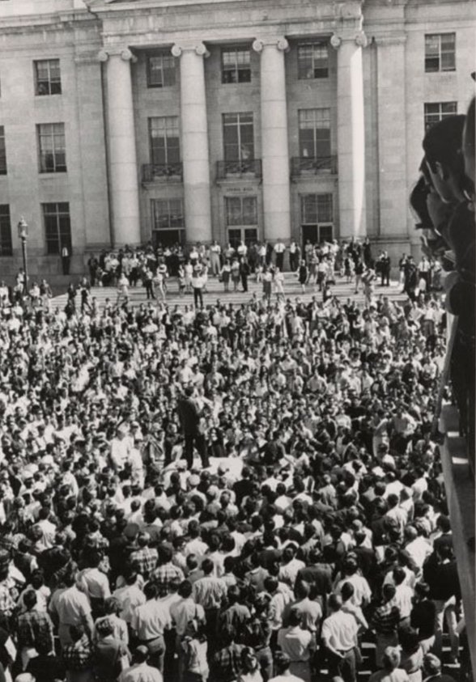
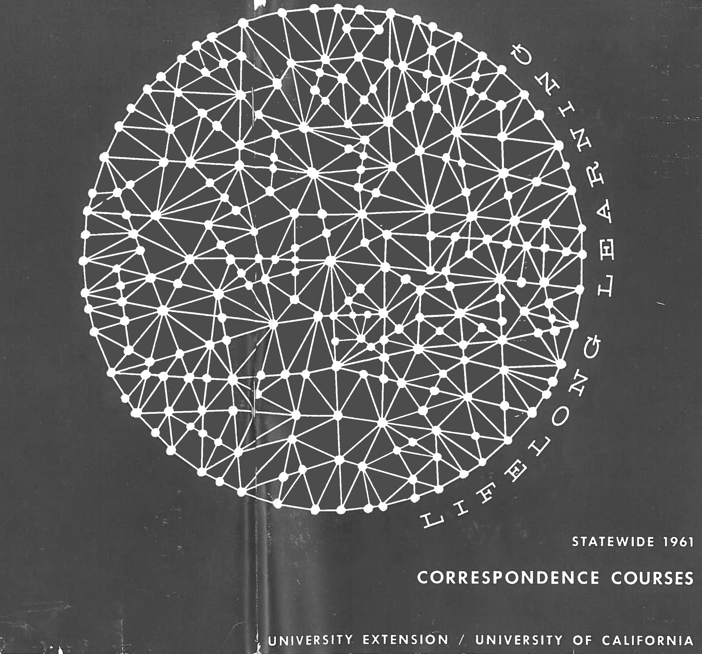
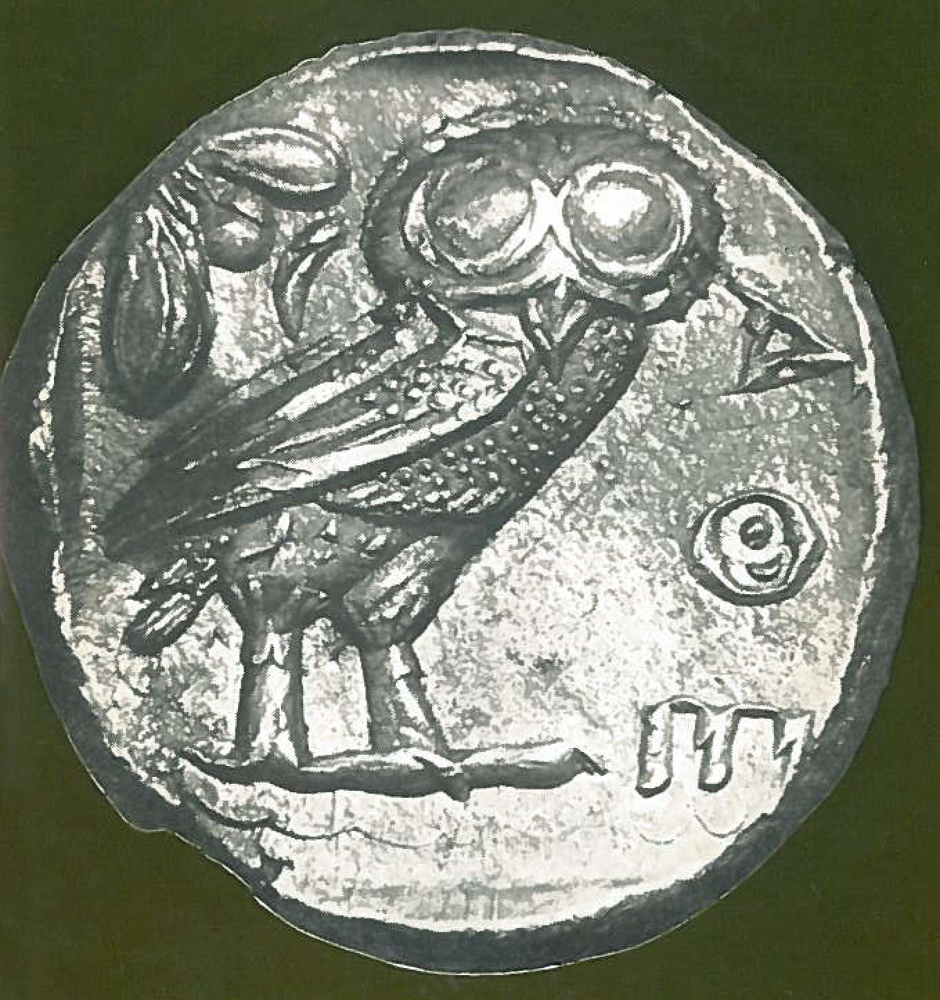

1951-1960
By the early 1950s, the model of a typical extension student was someone who already at least had some higher education. About 80% had college experience, 40% had earned a bachelor’s degree; and 67% were employed professional, semi professional or managerial occupations. Under the direction of Professor Woods, UC Extension moved successfully in two directions at once: First, it began offering “useful training” unrelated to traditional degree course offerings, and second, it shifted the emphasis of the class program from lower-division to upper-division and graduate work.With appropriate involvement of the faculty, Extension began offering a graduate degree in education in San Diego, and masters’ degrees in engineering first at five centers in the south and later in northern California as well. Propelled by the successful collaboration between Extension and the university’s faculty, the number of Extension units grew rapidly: Riverside in 1954; San Diego in 1959; Davis in 1960.

Free Speech Movement, Students Protesting by Sather Gate UARC Num.: 22B:6
Free Speech Movement. Crowd surrounding police car on Sproul Plaza, Oct. 2, 1964. Mario Savio speaking from roof of car. UARC Num.: 24B:2
1961-1970
The 1960s saw a trend toward decentralization. The UC campuses, and, along with them, the Extension units, were given more autonomy, making it possible to respond more quickly and effectively to local needs. By dividing the state into eight regions, one assigned to each Extension unit, all Californians were considered, even if there wasn’t a campus nearby. In 1965, the Extension network grew by two new units, Irvine and Santa Cruz.
During the 1960s, Extensions on most of the campuses participated in the Great Society movement with a variety of community development experiments, like the Oakland Project, which brought government agencies and independent citizen action groups together to improve their efficiency and effectiveness. In 1965, the Western Center for Community Education and Development was established at UCLA Extension “to provide continuing assistance to organizations, agencies and groups engaged in seeking solutions to community problems.” UCLA Extension also had one of the largest Peace Corps trainings in the country.
Given that nearly 70% of Extension students were working professionals, Governor Edmund G.Brown initiated action that eliminated Extension’s small portion of state funding. By 1968, Extension was completely self-supporting and Extension established certificate programs. Given the increasing demand in the job market for specialization, those seeking employment or advancement needed an efficient way to obtain training. Extension responded by developing certificate programs-planned sequences of courses designed under the guidance of advisory committees of campus faculty and top professionals.

